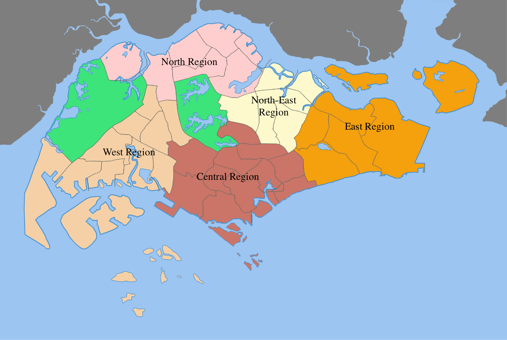
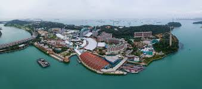
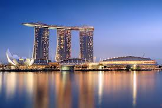
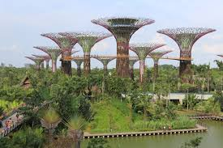

Singapur
Başkent: Singapur
Yüzölçümü: 728.6 km²
Nüfus: Yaklaşık 5.7 milyon
Para Birimi: Singapur Doları (SGD)
Singapur, Güneydoğu Asya'da yer alan bir şehir-devlet olup, dünya çapında finans merkezi ve teknoloji gelişimiyle öne çıkar. Modern mimarisi, yeşil alanları, turistik bölgeleri ve mutfağıyla ünlüdür. Şehir, yüksek yaşam kalitesi ve refah düzeyi ile tanınır.
Singapur Haritası

İklim ve Coğrafya
İklim: Singapur, ekvatoral bir iklime sahiptir. Yıl boyunca sıcak ve nemlidir. Ortalama sıcaklık 25°C ile 31°C arasında değişir. Yağışlar ise yılın her ayında görülür, ancak en yoğun yağışlar Kasım ve Ocak ayları arasında yaşanır.
Coğrafya: Singapur, 63 adadan oluşan bir şehir-devlettir ve Güneydoğu Asya'da Malezya'nın güneyinde, Endonezya'nın Sumatra Adası'nın kuzeyinde yer alır. Ana ada, tropikal ormanlarla kaplıdır ve şehrin geri kalan kısmı modern yapılar ve limanlarla çevrilidir.
Tarihi Gelişmeler
1819: Singapur, Sir Stamford Raffles tarafından Birleşik Krallık tarafından resmen kurulmuştur. Bu dönemde Singapur, İngiltere'nin Asya'daki önemli ticaret limanlarından biri haline gelmiştir.
1959: Singapur, kendi kendine yönetilen bir koloni haline geldi ve içişlerinde bağımsızlık kazandı. Aynı yıl, Singapur'da ilk tam oy verme sistemli seçimler yapıldı.
1965: Singapur, Malezya'dan ayrılarak bağımsızlık ilan etti ve Singapur Cumhuriyeti olarak kuruldu. Bağımsızlık sonrası Singapur hızla sanayileşti ve küresel bir finans merkezi haline geldi.
1990: Singapur, Lee Kuan Yew liderliğinde güçlü bir ekonomik kalkınma ve modernleşme süreci yaşadı. Bu dönemde şehirdeki altyapı büyük ölçüde geliştirilmiştir.
Bayramlar:
Singapur'da 9 Ağustos Ulusal Gün, bağımsızlığın kazanıldığı gün olarak her yıl büyük bir askeri geçit, hava gösterileri ve havai fişeklerle kutlanır. Bunun dışında çok kültürlü yapısı sayesinde Çin Yeni Yılı, Deepavali, Hari Raya Aidilfitri ve Noel gibi farklı inançlara dayalı bayramlar da ülke genelinde resmi tatil olarak kabul edilir ve birlikte kutlanır.

Hawker Yemekleri:
Singapur sokak lezzetleri, farklı etnik grupların mutfaklarını yansıtan zengin bir çeşitliliğe sahiptir. Hawker merkezleri, uygun fiyatlı ve hızlı servis yapılan mekanlardır. Burada Hint, Çin, Malay ve Batı mutfağından örnekler sunulur.

Çok kültürlü festivaller:
Singapur’da farklı dinlere ait festivaller birlikte yaşanır. Hindu topluluğu Deepavali'yi rengarenk süslemeler ve ışıklarla kutlarken; Müslümanlar Hari Raya’da camilere gider, geleneksel kıyafetler giyer. Çin Yeni Yılı ise danslar, kırmızı süslemeler ve aile yemekleriyle kutlanır.


Sentosa Adası - Singapur
Sentosa Adası, Singapur'un en popüler tatil ve eğlence destinasyonlarından biridir. Adada bulunan plajlar, temalı parklar, lüks tatil köyleri ve ünlü S.E.A. Aquarium gibi birçok turistik nokta ile ziyaretçilere eşsiz bir deneyim sunmaktadır. Ayrıca, Sentosa Adası'nda bulunan Universal Studios Singapur, dünyanın dört bir yanından gelen turistlerin ilgisini çeker. Sentosa, hem eğlenceli aktiviteler hem de doğal güzellikleri ile Singapur'un en gözde tatil beldesidir.

Sky Park - Singapur
Sky Park, Singapur'daki Marina Bay Sands Oteli'nin çatı katında yer alan ünlü bir gözlem terasıdır. 200 metreye kadar yükselen bu eşsiz park, ziyaretçilere şehri yüksekten izleme fırsatı sunmaktadır. Ayrıca Sky Park, havuz, restoranlar ve alışveriş alanları gibi birçok olanakla donatılmıştır. Singapur'un en ikonik yapılarından biri olan Sky Park, şehre gelen turistlerin mutlaka görmesi gereken yerlerden biridir.

Gardens by the Bay - Singapur
Gardens by the Bay, Singapur'un en ikonik botanik bahçelerinden biridir ve modern mimari ile doğal güzellikleri birleştirir. Bu büyük açık alan, devasa Süper Ağaçlar, şeffaf çelik kubbeler ve çeşitli temalı bahçelerle donatılmıştır. Bay South Garden, 101 hektarlık alanıyla en büyük bahçe olup, iç mekan bitkileri sergileri ve yürüyüş yollarıyla ziyaretçilere doğal bir deneyim sunar. Gardens by the Bay, Singapur'un yeşil alanlarını ve sürdürülebilirliğini simgeleyen eşsiz bir noktadır.